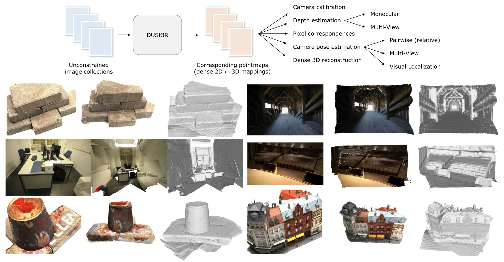
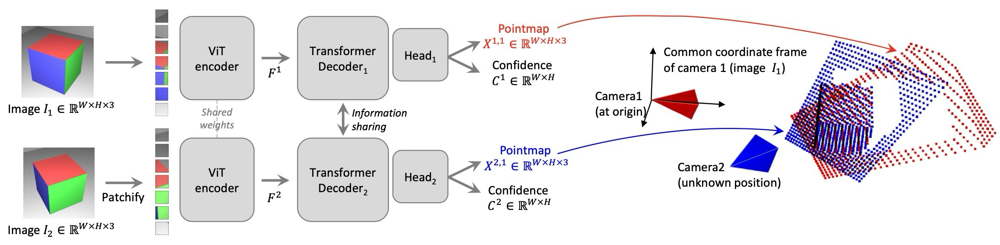
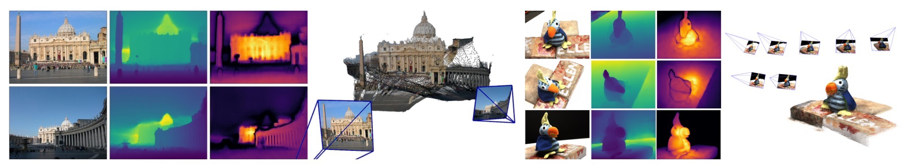
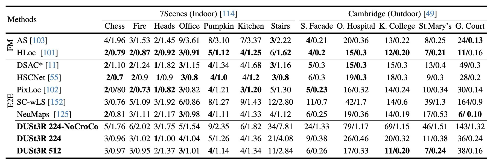
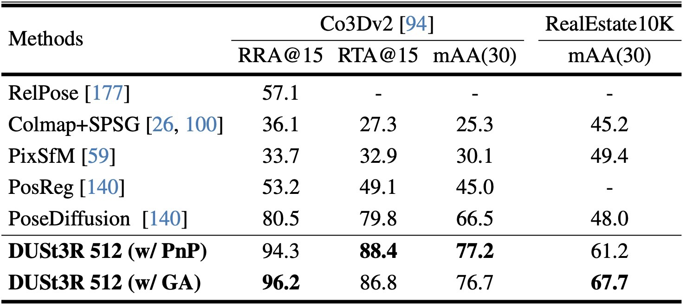
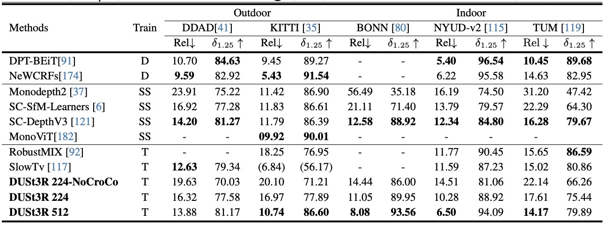
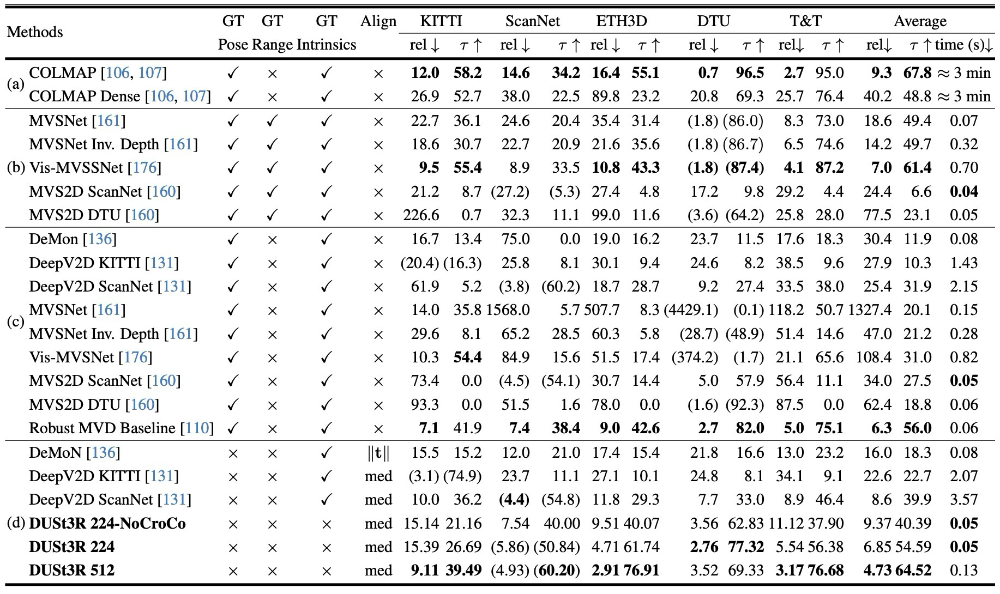
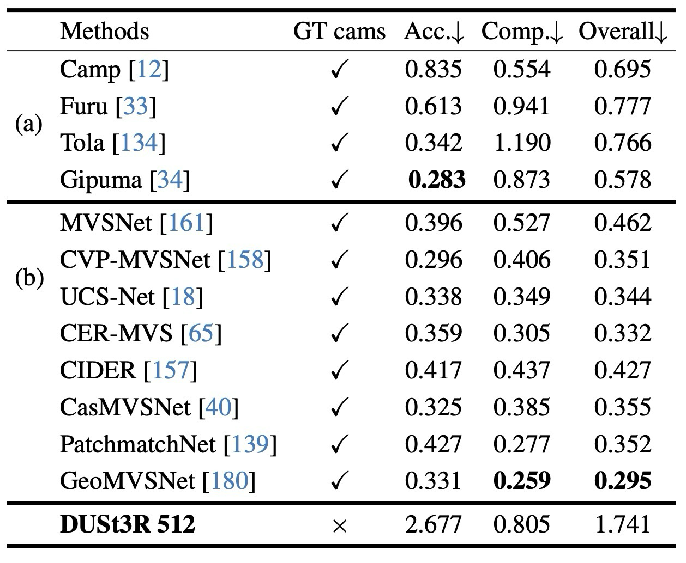
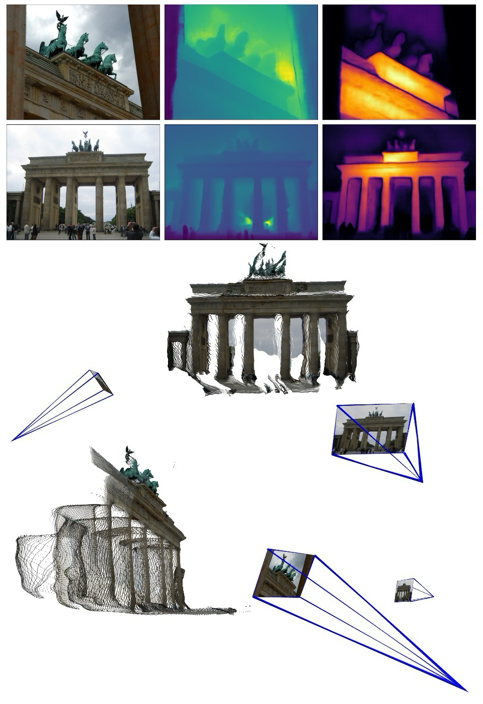

핵심 요약
DUSt3R는 camera pose와 intrinsics를 입력으로 요구하지 않고, pointmap을 직접 회귀해 unconstrained image collection을 dense 3D geometry로 바꾸는 방법이다.
DUSt3R는 camera를 먼저 추정한 뒤 3D를 복원하는 기존 순서를 뒤집어, 먼저 두 view가 같은 좌표계에 놓인 dense pointmap을 예측하고 여기서 depth, matching, pose, reconstruction을 회수한다.
Pointmap Representation
각 pixel을 3D point로 표현해 geometry, pixel-to-scene mapping, viewpoint 관계를 함께 담음.
Calibration-free Pairwise 3D
known intrinsics/pose 없이 image pair에서 대응 pointmap과 confidence map을 예측.
Global Alignment
pairwise pointmap prediction을 3D 공간 최적화로 하나의 global frame에 정렬.
Unified 3D Tasks
monocular depth, pixel matching, relative/absolute pose, MVS reconstruction을 하나의 표현으로 연결.
중요한 변화는 단순히 “더 강한 stereo network”가 아니라, dense 3D pointmap을 공통 화폐처럼 두고 camera, depth, matching, multi-view reconstruction을 모두 파생시킨다는 점이다.
camera-first pipeline
matching, camera, depth/reconstruction을 순차 모듈로 추정하므로 calibration이나 pose가 없을 때 오류가 누적되기 쉬움.
single-view geometry prior
한 장의 이미지에서 depth를 예측하지만 scale과 viewpoint 관계는 여전히 풀기 어려움.
pointmap-first reconstruction
aligned pointmap을 먼저 예측하고 camera pose, depth, matching, full reconstruction을 뒤에서 회수.
논문 상세 정리
아래부터는 기존 논문 내용을 최대한 담은 상세 해석이다. 핵심 흐름에서 벗어나는 배경지식, notation, 부가 자료는 접어두었다.
Problem: camera 없이 3D를 얼마나 직접 복원할 수 있나
DUSt3R의 문제의식은 multi-view reconstruction이 보통 camera pose와 intrinsics 추정에 먼저 의존한다는 데서 출발한다. 실제 사진 모음은 camera가 제각각이고 pose도 없기 때문에, SfM/MVS pipeline은 matching, camera estimation, depth estimation이 순서대로 흔들릴 수 있다.

논문은 기존 geometry pipeline의 순서를 바꾸어 3D pointmap을 먼저 얻고 나머지를 파생시키는 방향으로 문제를 다시 잡는다.
입력 image collection에 pose와 intrinsics가 없거나 일관되지 않음.
matching, camera recovery, MVS가 서로의 품질에 의존.
depth, pose, correspondence, reconstruction이 별도 task처럼 나뉨.
pointmap을 공통 표현으로 만들고 여러 3D task를 한 흐름에 묶음.
이 논문의 문제 제기는 “카메라를 먼저 풀어야 3D를 얻는다”는 전제를 약하게 만드는 데 있다.
| 기존 병목 | DUSt3R의 제안 | 얻는 효과 |
|---|---|---|
| Camera prior | known intrinsics/pose 없이 pointmap 회귀 | unconstrained image pair에도 적용 가능 |
| Sequential errors | network가 두 view를 함께 보고 aligned pointmap 예측 | matching/camera/depth를 한 표현에서 회수 |
| Multi-view fusion | pairwise pointmap을 global alignment로 정렬 | full-scale MVS reconstruction으로 확장 |
관련 연구 계열 자세히 보기
Related Work는 DUSt3R가 classical SfM/MVS를 그대로 학습하는 대신, camera를 암시적으로 담는 dense pointmap을 직접 예측한다는 위치를 잡아준다.
feature matching, pose estimation, triangulation, dense reconstruction으로 이어지는 camera-first pipeline.
cost volume이나 differentiable SfM 구조를 사용하지만 intrinsics/pose 입력에 기대는 경우가 많음.
single image geometry prior는 강하지만 scale과 view relation은 본질적으로 모호함.
pixel-aligned 3D point field로 camera relation과 geometry를 동시에 담는 표현.
Mechanism: pointmap을 어떻게 예측하고 정렬하나
DUSt3R의 방법론은 크게 세 단계다. 첫째, 두 image를 transformer로 함께 처리해 같은 좌표계의 pointmap을 예측한다. 둘째, confidence-aware regression loss로 불확실한 pixel의 영향을 조절한다. 셋째, 여러 image pair에서 나온 pointmap을 3D 공간에서 global alignment한다.

핵심은 pointmap이 geometry와 viewpoint relation을 동시에 담는 표현이라서, camera를 직접 입력하지 않아도 여러 3D quantity를 뒤에서 회수할 수 있다는 점이다.
| 구간 | 무엇을 해결하나 | 핵심 장치 |
|---|---|---|
| Pointmap definition | pixel별 3D 위치와 camera coordinate 관계를 하나의 field로 표현 | \(X^{n,m}=P_mP_n^{-1}h(X^n)\) |
| Network output | image pair에서 두 view의 aligned 3D를 직접 예측 | shared ViT encoder + cross-view decoder + DPT head |
| Training objective | scale ambiguity와 hard-to-predict region 처리 | scale-normalized regression + confidence weighting |
| Global alignment | pairwise prediction을 multi-view scene으로 확장 | 3D pointmap alignment objective |
camera intrinsics \(K\)와 depth \(D\)가 있으면 pointmap은 각 pixel을 camera coordinate의 3D point로 바꾼 것이다. 논문은 camera \(n\)에서 얻은 pointmap을 camera \(m\)의 좌표계로 표현하는 식을 먼저 정의한다.
network \(\mathcal{F}\)는 두 RGB image \(I_1\), \(I_2\)를 입력으로 받아 \(X^{1,1}\), \(X^{2,1}\)과 confidence \(C^{1,1}\), \(C^{2,1}\)을 출력한다. 두 pointmap은 모두 첫 번째 image \(I_1\)의 coordinate frame에 표현된다.

논문은 pointmap regression을 3D 공간의 거리로 학습한다. scale ambiguity를 줄이기 위해 prediction과 ground truth를 평균 거리 기준으로 정규화하고, 어려운 pixel에는 confidence를 함께 학습한다.
DUSt3R의 수식은 pointmap이 어느 coordinate frame에 표현되는지와, pairwise prediction을 global 3D frame으로 맞추는 변수를 구분해 읽으면 훨씬 명확하다.
| Notation | 의미 | 읽는 포인트 |
|---|---|---|
| \(X^n\), \(X^{n,m}\) | camera \(n\)에서 예측한 pointmap과 이를 camera \(m\) 좌표계로 옮긴 pointmap | DUSt3R는 depth map이 아니라 dense 3D pointmap을 직접 예측. |
| \(X_{i,j}=K^{-1}[iD_{i,j},jD_{i,j},D_{i,j}]^\top\) | intrinsics와 depth가 있을 때 pixel을 3D point로 바꾸는 pointmap 정의 | pointmap은 \(\mathbb{R}^{W\times H\times 3}\) 형태의 dense 3D field. |
| \(P_n\), \(P_m\), \(h(\cdot)\) | camera pose와 homogeneous coordinate 변환 | Eq. (1)은 pointmap을 다른 camera frame으로 바꾸는 rigid transform. |
| \(D_v\), \(i\), \(v\) | view \(v\)의 valid pixel 집합과 pixel index | invalid depth/occlusion 영역은 training loss에서 제외. |
| \(z\), \(\bar z\) | prediction과 ground truth의 scale normalization factor | unknown scale을 없애고 3D 방향/형상 차이에 집중. |
| \(C_i^{v,1}\) | pixel confidence | 어려운 pixel의 영향은 낮추되, \(-\alpha\log C\)로 confidence collapse를 방지. |
| \(\chi_i^v\), \(\sigma_e\), \(P_e\) | global pointmap, pair scale, pair pose | Eq. (5)는 pairwise pointmap을 global 3D frame으로 정렬하는 DUSt3R식 BA 역할. |
두 장짜리 prediction만으로는 전체 scene reconstruction이 되지 않는다. DUSt3R는 image pair를 edge로 둔 connectivity graph를 만들고, 각 pair의 pointmap을 공통 3D frame에 맞추는 최적화를 수행한다. 전통적인 BA처럼 2D reprojection error를 최소화하는 대신, 3D pointmap alignment error를 직접 최소화한다.
Camera recovery / focal estimation 세부 보기
pointmap은 3D geometry뿐 아니라 pixel correspondence와 camera parameter recovery에도 쓰인다. 이 부분은 논문의 주장을 뒷받침하지만, 핵심 흐름에서는 보조 설명으로 접어둔다.
| 회수 대상 | 방식 | 의미 |
|---|---|---|
| Pixel matches | 두 pointmap 사이의 nearest neighbor를 이용 | feature descriptor 없이 dense correspondence 도출 |
| Focal length | principal point centered, square pixel 가정 아래 pointmap projection 최적화 | intrinsics가 없어도 camera parameter 추정 가능 |
| Relative pose | 2D-2D matching 또는 pointmap의 3D-3D alignment 이용 | pose estimation task로 연결 |
| Absolute pose | database image와 query image 사이 correspondence를 만들고 PnP-RANSAC 적용 | visual localization에도 zero-shot으로 사용 |
Evidence: 어떤 task에서 검증했나
DUSt3R의 평가는 하나의 task 성능만 보는 방식이 아니다. pointmap 표현이 실제로 범용적인지 확인하기 위해 visual localization, multi-view pose, monocular depth, multi-view depth, 3D reconstruction을 모두 연결해서 검증한다.
각 결과는 “pointmap만으로 무엇을 회수할 수 있는가”라는 질문에 대응된다.
correspondence와 camera를 pointmap에서 회수할 수 있는지 확인.
pointmap의 z-coordinate와 confidence aggregation이 depth task로 이어지는지 확인.
pairwise pointmap을 global 3D scene으로 정렬할 수 있는지 확인.






결과를 하나로 묶으면, DUSt3R는 “pointmap 하나로 여러 3D vision task를 풀 수 있다”는 주장을 실험적으로 밀고 간다.
pointmap에서 correspondence와 camera를 회수해 localization/multi-view pose에 사용.
pointmap의 z-coordinate와 confidence aggregation으로 mono/multi-view depth 평가.
global alignment를 통해 camera-free MVS reconstruction으로 확장.
Usage / Limits: 언제 유용하고 어디서 조심해야 하나
DUSt3R는 입력 image의 camera 정보가 없거나, 여러 3D task를 빠르게 하나의 representation에서 뽑아내고 싶을 때 강하다. 반면 global alignment는 pairwise prediction의 품질과 graph 연결성에 기대기 때문에, 장면 overlap이 약하거나 domain gap이 큰 상황에서는 alignment 품질을 따로 확인해야 한다.
실험 결과와 적용 범위를 application 조건으로 정리하면 다음과 같다.
| 구분 | 요약 | 이유 |
|---|---|---|
| Good fit | pose/intrinsics가 없는 image pair 또는 small image collection | camera-free pointmap prediction이 바로 작동 |
| Useful output | depth, matching, relative/absolute pose, reconstruction을 함께 보고 싶을 때 | pointmap이 여러 quantity를 회수하는 공통 표현 역할 |
| Check carefully | overlap이 낮거나 pair graph가 약한 multi-view scene | global alignment가 pairwise prediction과 confidence에 의존 |
| Limitation | metric precision이나 dense MVS 전용 tuning이 중요한 경우 | generic reconstruction prior이므로 downstream refinement가 필요할 수 있음 |
느낀점
(진행중...)
Problem: can 3D be recovered without camera priors?
DUSt3R starts from a practical bottleneck in multi-view reconstruction: most pipelines first depend on camera poses and intrinsics. Real image collections are unconstrained, so matching, camera estimation, and dense reconstruction can fail in sequence.
The paper changes the order of the geometry pipeline: obtain dense 3D pointmaps first, then derive the rest.
Image collections may lack consistent pose and intrinsic information.
Matching, camera recovery, and MVS depend on one another.
Depth, pose, correspondence, and reconstruction are often treated as separate tasks.
Use pointmaps as a shared representation for many 3D tasks.
The paper weakens the assumption that cameras must be solved before 3D can be recovered.
| Bottleneck | DUSt3R's proposal | Effect |
|---|---|---|
| Camera prior | Regress pointmaps without known intrinsics or pose | Works on unconstrained image pairs |
| Sequential errors | Process two views jointly and predict aligned pointmaps | Derive matching, camera, and depth from one representation |
| Multi-view fusion | Align pairwise pointmaps through global alignment | Extends to full-scale MVS reconstruction |
Related work details
DUSt3R is positioned against camera-first SfM/MVS and learned MVS methods that still often depend on camera inputs.
A camera-first pipeline of feature matching, pose estimation, triangulation, and dense reconstruction.
Often uses cost volumes or differentiable SfM but still depends on camera intrinsics or poses.
Strong single-view priors, but scale and viewpoint relations remain ambiguous.
A pixel-aligned 3D point field that implicitly contains geometry and viewpoint relation.
Mechanism: how are pointmaps predicted and aligned?
The method has three main pieces. It predicts two pointmaps in a shared coordinate frame, trains them with confidence-aware regression, and aligns pairwise predictions into a global 3D space.
The key is that a pointmap is a representation that carries both geometry and viewpoint relation.
| Part | What it solves | Core device |
|---|---|---|
| Pointmap definition | Represents pixel-wise 3D locations and camera-frame relation | \(X^{n,m}=P_mP_n^{-1}h(X^n)\) |
| Network output | Predicts aligned 3D from an image pair | Shared ViT encoder + cross-view decoder + DPT head |
| Training objective | Handles scale ambiguity and uncertain pixels | Scale-normalized regression + confidence weighting |
| Global alignment | Extends pairwise predictions to a multi-view scene | 3D pointmap alignment objective |
With intrinsics \(K\) and depth \(D\), a pointmap maps each pixel into a 3D point in camera coordinates. The paper defines how a pointmap from camera \(n\) is represented in camera \(m\)'s coordinate frame.
The network \(\mathcal{F}\) takes \(I_1\), \(I_2\) and outputs \(X^{1,1}\), \(X^{2,1}\) plus confidence maps \(C^{1,1}\), \(C^{2,1}\). Both pointmaps are expressed in the coordinate frame of the first image.
The model is trained in 3D space. To handle scale ambiguity, prediction and ground truth pointmaps are normalized by average point distance; confidence weighting handles difficult or ill-defined regions.
DUSt3R equations are easiest to read by separating coordinate-frame notation from the variables used to align pairwise predictions into a global 3D frame.
| Notation | Meaning | How to read it |
|---|---|---|
| \(X^n\), \(X^{n,m}\) | Pointmap predicted from camera \(n\), and the same pointmap expressed in camera \(m\)'s frame | DUSt3R predicts dense 3D pointmaps directly, not only depth maps. |
| \(X_{i,j}=K^{-1}[iD_{i,j},jD_{i,j},D_{i,j}]^\top\) | Pointmap definition when intrinsics and depth are known | A pointmap is a dense 3D field in \(\mathbb{R}^{W\times H\times 3}\). |
| \(P_n\), \(P_m\), \(h(\cdot)\) | Camera poses and homogeneous-coordinate conversion | Eq. (1) is the rigid transform that changes the pointmap coordinate frame. |
| \(D_v\), \(i\), \(v\) | Valid pixel set, pixel index, and view index | Invalid depth or occlusion regions are excluded from the training loss. |
| \(z\), \(\bar z\) | Scale normalization factors for prediction and ground truth | Removes unknown scale so the loss focuses on 3D direction and shape. |
| \(C_i^{v,1}\) | Pixel confidence | Downweights difficult pixels while \(-\alpha\log C\) prevents confidence collapse. |
| \(\chi_i^v\), \(\sigma_e\), \(P_e\) | Global pointmap, pair scale, and pair pose | Eq. (5) plays a DUSt3R-style BA role by aligning pairwise pointmaps into one global 3D frame. |
For multiple images, DUSt3R constructs a connectivity graph over image pairs and aligns pairwise pointmap predictions in 3D space. Unlike classical BA, the objective minimizes 3D alignment error rather than 2D reprojection error.
Camera recovery / focal estimation details
Pointmaps can also recover pixel correspondences and camera parameters. These details support the paper's claim but are secondary to the main mechanism.
| Recovered target | How | Meaning |
|---|---|---|
| Pixel matches | Nearest neighbors between pointmaps | Dense correspondence without a separate descriptor |
| Focal length | Optimize projection under centered-principal-point and square-pixel assumptions | Recover intrinsics from a pointmap |
| Relative pose | Use 2D matches or direct 3D-3D pointmap alignment | Connects to pose estimation |
| Absolute pose | Create query/database correspondences and run PnP-RANSAC | Enables visual localization |
Evidence: which tasks validate the idea?
DUSt3R is evaluated across several tasks because the central claim is representational: one pointmap-based model should support visual localization, multi-view pose, monocular depth, multi-view depth, and 3D reconstruction.
Each result corresponds to a different question about what can be derived from pointmaps.
Can correspondences and cameras be recovered from pointmaps?
Can z-coordinates and confidence aggregation support depth tasks?
Can pairwise pointmaps be aligned into a global 3D scene?
The experiments collectively support the claim that pointmaps can serve as one representation for many 3D vision tasks.
Correspondence and camera recovery are derived from pointmaps.
The z-coordinate and confidence aggregation support mono/multi-view depth.
Global alignment turns pairwise predictions into MVS reconstruction.
Usage / Limits: when is it useful?
DUSt3R is useful when image poses and intrinsics are unavailable, or when many 3D outputs should be derived from one representation. However, global alignment still depends on pairwise prediction quality and graph connectivity.
The experimental scope can be summarized as application conditions.
| Category | Summary | Reason |
|---|---|---|
| Good fit | Image pairs or small collections without pose/intrinsics | Camera-free pointmap prediction works directly |
| Useful output | Depth, matching, pose, and reconstruction from one model | Pointmaps act as a shared representation |
| Check carefully | Low-overlap multi-view scenes or weak connectivity graphs | Global alignment depends on pairwise predictions and confidence |
| Limitation | Highly precise metric MVS or domain-specific reconstruction | Generic priors may still need downstream refinement |
Takeaway
(Writing in progress...)
Comments